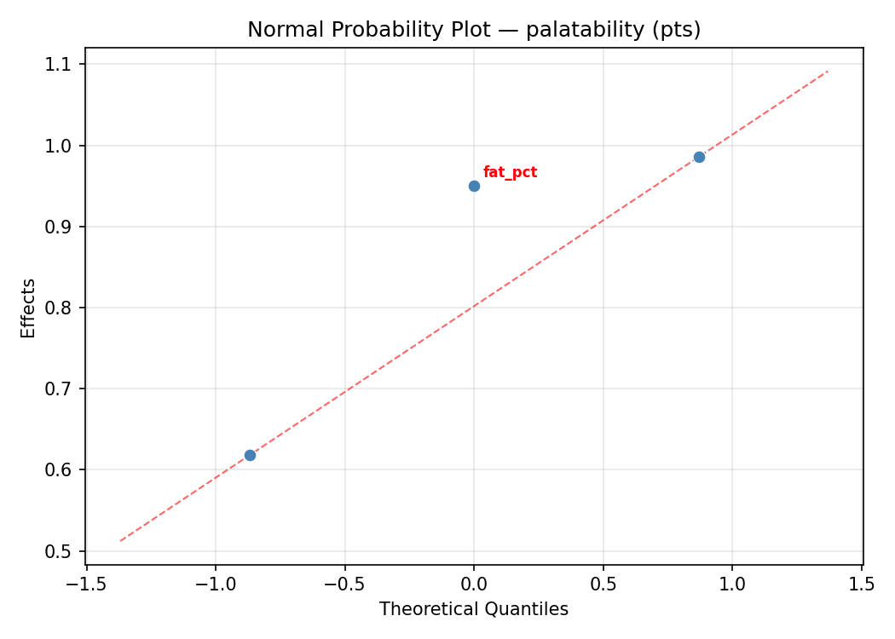
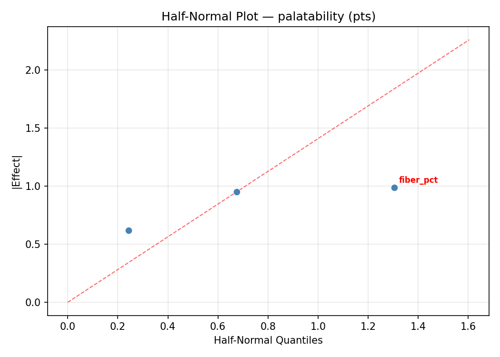
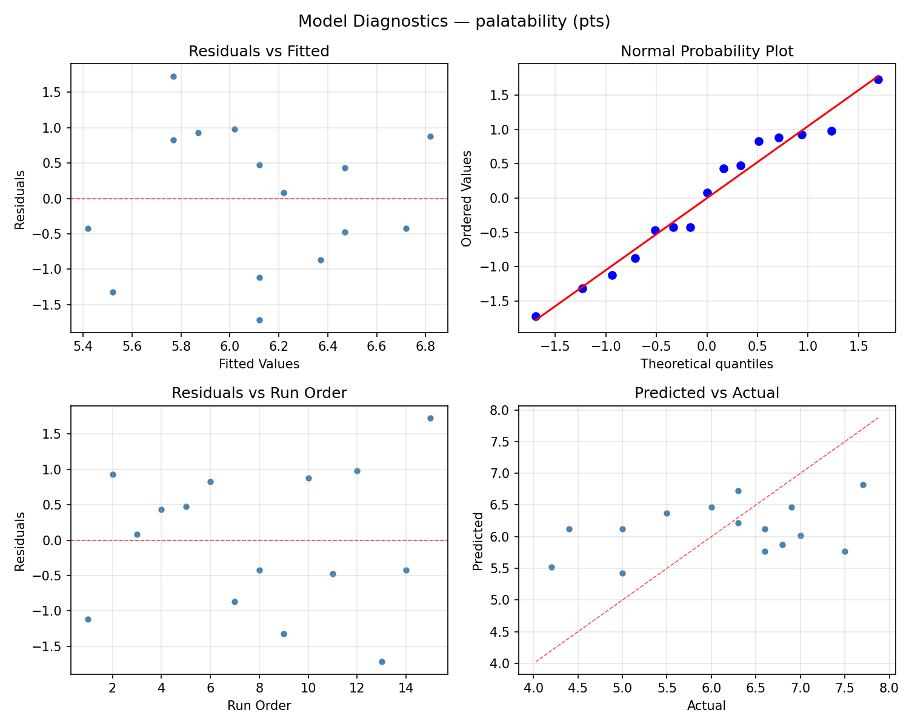
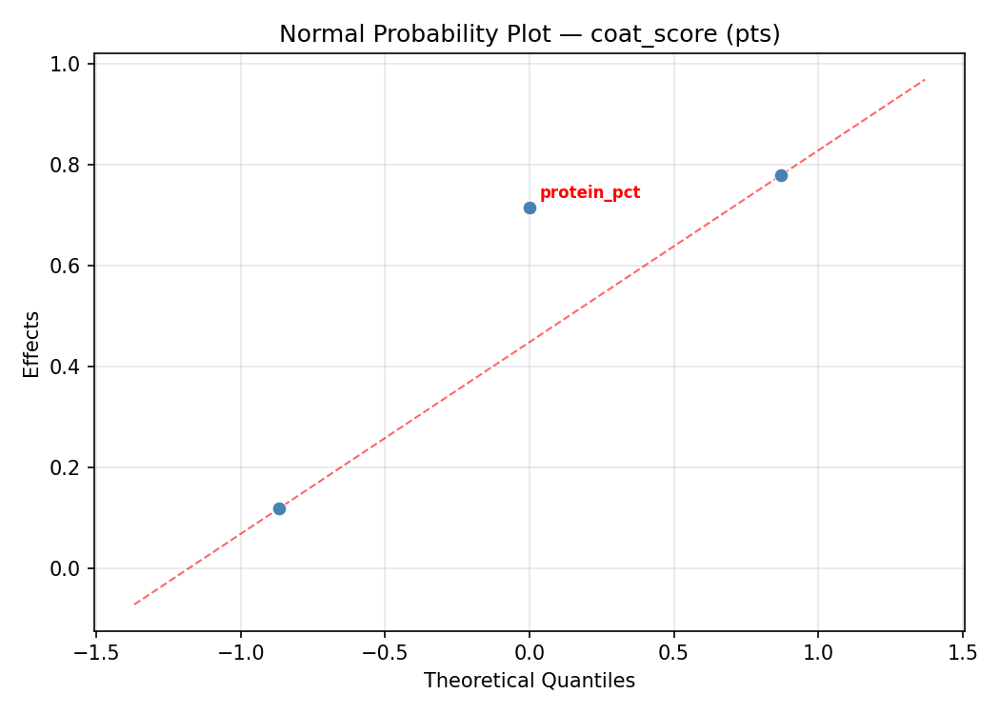
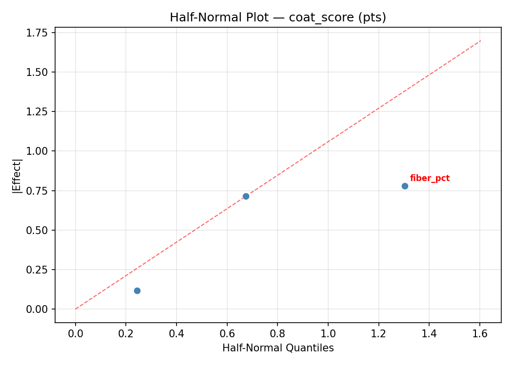
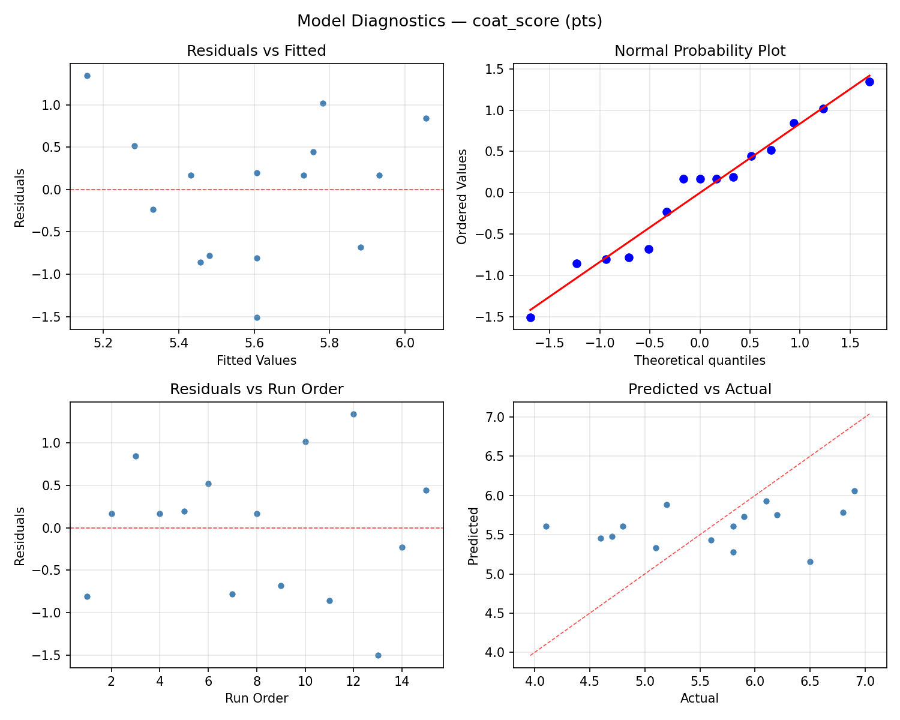

Summary
This experiment investigates dog kibble formulation. Box-Behnken design to maximize palatability and coat condition by tuning protein content, fat percentage, and fiber content.
The design varies 3 factors: protein pct (%), ranging from 20 to 35, fat pct (%), ranging from 8 to 18, and fiber pct (%), ranging from 2 to 6. The goal is to optimize 2 responses: palatability (pts) (maximize) and coat score (pts) (maximize). Fixed conditions held constant across all runs include breed size = medium, life stage = adult.
A Box-Behnken design was chosen because it efficiently fits quadratic models with 3 continuous factors while avoiding extreme corner combinations — requiring only 15 runs instead of the 8 needed for a full factorial at two levels.
Quadratic response surface models were fitted to capture potential curvature and factor interactions. The RSM contour plots below visualize how pairs of factors jointly affect each response.
Key Findings
For palatability, the most influential factors were fat pct (53.9%), protein pct (32.8%), fiber pct (13.3%). The best observed value was 7.7 (at protein pct = 35, fat pct = 13, fiber pct = 6).
For coat score, the most influential factors were fat pct (51.8%), protein pct (35.5%), fiber pct (12.7%). The best observed value was 6.9 (at protein pct = 27.5, fat pct = 13, fiber pct = 4).
Recommended Next Steps
- Run confirmation experiments at the predicted optimal settings to validate the model.
- Consider whether any fixed factors should be varied in a future study.
Experimental Setup
Factors
| Factor | Low | High | Unit |
|---|
protein_pct | 20 | 35 | % |
fat_pct | 8 | 18 | % |
fiber_pct | 2 | 6 | % |
Fixed: breed_size = medium, life_stage = adult
Responses
| Response | Direction | Unit |
|---|
palatability | ↑ maximize | pts |
coat_score | ↑ maximize | pts |
Configuration
{
"metadata": {
"name": "Dog Kibble Formulation",
"description": "Box-Behnken design to maximize palatability and coat condition by tuning protein content, fat percentage, and fiber content"
},
"factors": [
{
"name": "protein_pct",
"levels": [
"20",
"35"
],
"type": "continuous",
"unit": "%"
},
{
"name": "fat_pct",
"levels": [
"8",
"18"
],
"type": "continuous",
"unit": "%"
},
{
"name": "fiber_pct",
"levels": [
"2",
"6"
],
"type": "continuous",
"unit": "%"
}
],
"fixed_factors": {
"breed_size": "medium",
"life_stage": "adult"
},
"responses": [
{
"name": "palatability",
"optimize": "maximize",
"unit": "pts"
},
{
"name": "coat_score",
"optimize": "maximize",
"unit": "pts"
}
],
"settings": {
"operation": "box_behnken",
"test_script": "use_cases/167_dog_kibble_formulation/sim.sh"
}
}
Experimental Matrix
The Box-Behnken Design produces 15 runs. Each row is one experiment with specific factor settings.
| Run | protein_pct | fat_pct | fiber_pct |
|---|
| 1 | 27.5 | 8 | 2 |
| 2 | 27.5 | 13 | 4 |
| 3 | 35 | 13 | 6 |
| 4 | 35 | 13 | 2 |
| 5 | 27.5 | 13 | 4 |
| 6 | 27.5 | 13 | 4 |
| 7 | 20 | 13 | 6 |
| 8 | 35 | 8 | 4 |
| 9 | 27.5 | 8 | 6 |
| 10 | 35 | 18 | 4 |
| 11 | 20 | 13 | 2 |
| 12 | 27.5 | 18 | 6 |
| 13 | 20 | 8 | 4 |
| 14 | 20 | 18 | 4 |
| 15 | 27.5 | 18 | 2 |
Step-by-Step Workflow
1
Preview the design
$ python doe.py info --config use_cases/167_dog_kibble_formulation/config.json
2
Generate the runner script
$ python doe.py generate --config use_cases/167_dog_kibble_formulation/config.json \
--output use_cases/167_dog_kibble_formulation/results/run.sh --seed 42
3
Execute the experiments
$ bash use_cases/167_dog_kibble_formulation/results/run.sh
4
Analyze results
$ python doe.py analyze --config use_cases/167_dog_kibble_formulation/config.json
5
Get optimization recommendations
$ python doe.py optimize --config use_cases/167_dog_kibble_formulation/config.json
6
Multi-objective optimization
With 2 competing responses, use --multi to find the best compromise via Derringer–Suich desirability.
$ python doe.py optimize --config use_cases/167_dog_kibble_formulation/config.json --multi
7
Generate the HTML report
$ python doe.py report --config use_cases/167_dog_kibble_formulation/config.json \
--output use_cases/167_dog_kibble_formulation/results/report.html
Features Exercised
| Feature | Value |
|---|
| Design type | box_behnken |
| Factor types | continuous (all 3) |
| Arg style | double-dash |
| Responses | 2 (palatability ↑, coat_score ↑) |
| Total runs | 15 |
Analysis Results
Generated from actual experiment runs using the DOE Helper Tool.
Response: palatability
Top factors: fat_pct (53.9%), protein_pct (32.8%), fiber_pct (13.3%).
ANOVA
| Source | DF | SS | MS | F | p-value |
|---|
| Source | DF | SS | MS | F | p-value |
| protein_pct | 2 | 1.2754 | 0.6377 | 0.590 | 0.5765 |
| fat_pct | 2 | 3.3997 | 1.6999 | 1.574 | 0.2652 |
| fiber_pct | 2 | 0.1997 | 0.0999 | 0.092 | 0.9126 |
| Lack | of | Fit | 6 | 9.2891 | 1.5482 |
| Pure | Error | 2 | 2.1600 | | |
| Error | 8 | 11.4491 | 1.0800 | | |
| Total | 14 | 16.3240 | 1.1660 | | |
Pareto Chart

Main Effects Plot

Normal Probability Plot of Effects

Half-Normal Plot of Effects

Model Diagnostics

Response: coat_score
Top factors: fat_pct (51.8%), protein_pct (35.5%), fiber_pct (12.7%).
ANOVA
| Source | DF | SS | MS | F | p-value |
|---|
| Source | DF | SS | MS | F | p-value |
| protein_pct | 2 | 0.7175 | 0.3588 | 1.110 | 0.3756 |
| fat_pct | 2 | 2.0258 | 1.0129 | 3.133 | 0.0989 |
| fiber_pct | 2 | 0.0933 | 0.0466 | 0.144 | 0.8679 |
| Lack | of | Fit | 6 | 6.3461 | 1.0577 |
| Pure | Error | 2 | 0.6467 | | |
| Error | 8 | 6.9928 | 0.3233 | | |
| Total | 14 | 9.8293 | 0.7021 | | |
Pareto Chart

Main Effects Plot

Normal Probability Plot of Effects

Half-Normal Plot of Effects

Model Diagnostics

Response Surface Plots
3D surfaces fitted with quadratic RSM. Red dots are observed data points.
coat score fat pct vs fiber pct

coat score protein pct vs fat pct

coat score protein pct vs fiber pct

palatability fat pct vs fiber pct

palatability protein pct vs fat pct

palatability protein pct vs fiber pct

Multi-Objective Optimization
When responses compete, Derringer–Suich desirability finds the best compromise.
Each response is scaled to a 0–1 desirability, then combined via a weighted geometric mean.
Overall Desirability
D = 0.9382
Per-Response Desirability
| Response | Weight | Desirability | Predicted | Dir |
|---|
palatability |
1.5 |
|
7.70 0.9545 7.70 pts |
↑ |
coat_score |
1.5 |
|
6.80 0.9221 6.80 pts |
↑ |
Recommended Settings
| Factor | Value |
|---|
protein_pct | 20 % |
fat_pct | 18 % |
fiber_pct | 4 % |
Source: from observed run #10
Trade-off Summary
Sacrifice = how much worse than single-objective best.
| Response | Predicted | Best Observed | Sacrifice |
|---|
coat_score | 6.80 | 6.90 | +0.10 |
Top 3 Runs by Desirability
| Run | D | Factor Settings |
|---|
| #15 | 0.8102 | protein_pct=35, fat_pct=8, fiber_pct=4 |
| #12 | 0.7983 | protein_pct=35, fat_pct=13, fiber_pct=2 |
Model Quality
| Response | R² | Type |
|---|
coat_score | 0.0415 | linear |
Full Multi-Objective Output
============================================================
MULTI-OBJECTIVE OPTIMIZATION
Method: Derringer-Suich Desirability Function
============================================================
Overall desirability: D = 0.9382
Response Weight Desirability Predicted Direction
---------------------------------------------------------------------
palatability 1.5 0.9545 7.70 pts ↑
coat_score 1.5 0.9221 6.80 pts ↑
Recommended settings:
protein_pct = 20 %
fat_pct = 18 %
fiber_pct = 4 %
(from observed run #10)
Trade-off summary:
palatability: 7.70 (best observed: 7.70, sacrifice: +0.00)
coat_score: 6.80 (best observed: 6.90, sacrifice: +0.10)
Model quality:
palatability: R² = 0.8285 (quadratic)
coat_score: R² = 0.0415 (linear)
Top 3 observed runs by overall desirability:
1. Run #10 (D=0.9382): protein_pct=20, fat_pct=18, fiber_pct=4
2. Run #15 (D=0.8102): protein_pct=35, fat_pct=8, fiber_pct=4
3. Run #12 (D=0.7983): protein_pct=35, fat_pct=13, fiber_pct=2
Full Analysis Output
=== Main Effects: palatability ===
Factor Effect Std Error % Contribution
--------------------------------------------------------------
fat_pct 1.1286 0.2788 53.9%
protein_pct 0.6857 0.2788 32.8%
fiber_pct 0.2786 0.2788 13.3%
=== ANOVA Table: palatability ===
Source DF SS MS F p-value
-----------------------------------------------------------------------------
protein_pct 2 1.2754 0.6377 0.590 0.5765
fat_pct 2 3.3997 1.6999 1.574 0.2652
fiber_pct 2 0.1997 0.0999 0.092 0.9126
Lack of Fit 6 9.2891 1.5482 1.434 0.4659
Pure Error 2 2.1600 1.0800
Error 8 11.4491 1.0800
Total 14 16.3240 1.1660
=== Summary Statistics: palatability ===
protein_pct:
Level N Mean Std Min Max
------------------------------------------------------------
20 4 6.6000 0.9309 5.5000 7.7000
27.5 7 5.9143 1.1922 4.2000 7.5000
35 4 6.0000 1.1431 4.4000 7.0000
fat_pct:
Level N Mean Std Min Max
------------------------------------------------------------
13 7 5.7714 1.1528 4.4000 7.7000
18 4 5.9500 1.2124 4.2000 7.0000
8 4 6.9000 0.4243 6.6000 7.5000
fiber_pct:
Level N Mean Std Min Max
------------------------------------------------------------
2 4 5.9500 1.9088 4.2000 7.7000
4 7 6.2286 0.8693 5.0000 7.0000
6 4 6.1000 0.4690 5.5000 6.6000
=== Main Effects: coat_score ===
Factor Effect Std Error % Contribution
--------------------------------------------------------------
fat_pct 0.7607 0.2163 51.8%
protein_pct 0.5214 0.2163 35.5%
fiber_pct 0.1857 0.2163 12.7%
=== ANOVA Table: coat_score ===
Source DF SS MS F p-value
-----------------------------------------------------------------------------
protein_pct 2 0.7175 0.3588 1.110 0.3756
fat_pct 2 2.0258 1.0129 3.133 0.0989
fiber_pct 2 0.0933 0.0466 0.144 0.8679
Lack of Fit 6 6.3461 1.0577 3.271 0.2526
Pure Error 2 0.6467 0.3233
Error 8 6.9928 0.3233
Total 14 9.8293 0.7021
=== Summary Statistics: coat_score ===
protein_pct:
Level N Mean Std Min Max
------------------------------------------------------------
20 4 5.6750 0.9535 4.7000 6.8000
27.5 7 5.7714 0.6800 4.8000 6.9000
35 4 5.2500 1.0970 4.1000 6.5000
fat_pct:
Level N Mean Std Min Max
------------------------------------------------------------
13 7 5.2143 0.9299 4.1000 6.8000
18 4 5.9250 0.9106 5.1000 6.9000
8 4 5.9750 0.2062 5.8000 6.2000
fiber_pct:
Level N Mean Std Min Max
------------------------------------------------------------
2 4 5.5750 1.1843 4.1000 6.8000
4 7 5.6857 0.5815 4.8000 6.5000
6 4 5.5000 1.0801 4.6000 6.9000
Optimization Recommendations
=== Optimization: palatability ===
Direction: maximize
Best observed run: #10
protein_pct = 35
fat_pct = 13
fiber_pct = 6
Value: 7.7
RSM Model (linear, R² = 0.1202, Adj R² = -0.1197):
Coefficients:
intercept +6.1200
protein_pct -0.3375
fat_pct -0.0000
fiber_pct +0.3625
RSM Model (quadratic, R² = 0.5946, Adj R² = -0.1351):
Coefficients:
intercept +5.6000
protein_pct -0.3375
fat_pct -0.0000
fiber_pct +0.3625
protein_pct*fat_pct +0.2250
protein_pct*fiber_pct +0.2500
fat_pct*fiber_pct +0.9250
protein_pct^2 +0.4500
fat_pct^2 -0.3250
fiber_pct^2 +0.8500
Curvature analysis:
fiber_pct coef=+0.8500 convex (has a minimum)
protein_pct coef=+0.4500 convex (has a minimum)
fat_pct coef=-0.3250 concave (has a maximum)
Notable interactions:
fat_pct*fiber_pct coef=+0.9250 (synergistic)
Predicted optimum (from linear model, at observed points):
protein_pct = 20
fat_pct = 13
fiber_pct = 6
Predicted value: 6.8200
Surface optimum (via L-BFGS-B, linear model):
protein_pct = 20
fat_pct = 12.3888
fiber_pct = 6
Predicted value: 6.8200
Model quality: Weak fit — consider adding center points or using a different design.
Factor importance:
1. fiber_pct (effect: 1.2, contribution: 50.8%)
2. protein_pct (effect: 0.8, contribution: 31.6%)
3. fat_pct (effect: 0.4, contribution: 17.6%)
=== Optimization: coat_score ===
Direction: maximize
Best observed run: #3
protein_pct = 27.5
fat_pct = 13
fiber_pct = 4
Value: 6.9
RSM Model (linear, R² = 0.0216, Adj R² = -0.2452):
Coefficients:
intercept +5.6067
protein_pct +0.1500
fat_pct +0.0125
fiber_pct +0.0625
RSM Model (quadratic, R² = 0.4985, Adj R² = -0.4041):
Coefficients:
intercept +5.4667
protein_pct +0.1500
fat_pct +0.0125
fiber_pct +0.0625
protein_pct*fat_pct +0.1500
protein_pct*fiber_pct +0.2500
fat_pct*fiber_pct +0.8250
protein_pct^2 +0.5542
fat_pct^2 -0.3208
fiber_pct^2 +0.0292
Curvature analysis:
protein_pct coef=+0.5542 convex (has a minimum)
fat_pct coef=-0.3208 concave (has a maximum)
fiber_pct coef=+0.0292 negligible curvature
Notable interactions:
fat_pct*fiber_pct coef=+0.8250 (synergistic)
Predicted optimum (from linear model, at observed points):
protein_pct = 35
fat_pct = 13
fiber_pct = 6
Predicted value: 5.8192
Surface optimum (via L-BFGS-B, linear model):
protein_pct = 35
fat_pct = 18
fiber_pct = 6
Predicted value: 5.8317
Model quality: Weak fit — consider adding center points or using a different design.
Factor importance:
1. protein_pct (effect: 0.7, contribution: 59.2%)
2. fat_pct (effect: 0.4, contribution: 30.6%)
3. fiber_pct (effect: 0.1, contribution: 10.2%)